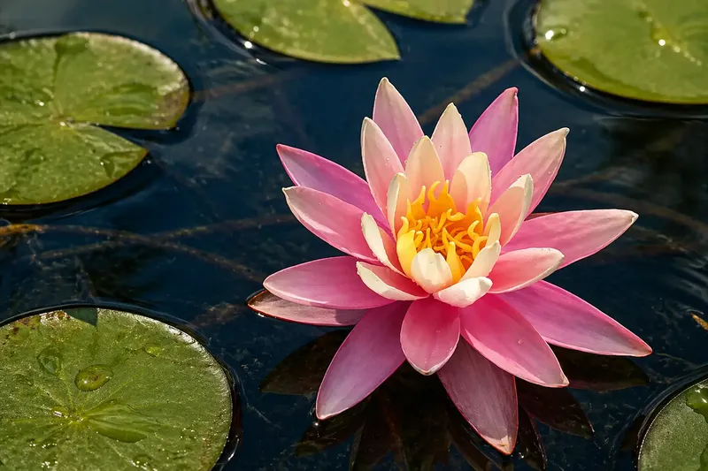

Растения для пруда
Нимфея “Пинк Грейпфрут”
Цена и наличие
- C2-C590 BYN / шт.В наличии
- C10-C20120 BYN / шт.В наличии
Данные на 23.11.2026.
Характеристики
- Размер сорта
- Крупный
- Глубина посадки
- 60-80 см
- Диаметр цветка
- 17-20 см
- Диаметр покрытия воды
- 1-1,3 м
Описание
Нимфея "Pink Grapefruit" (Пинк Грейпфрут) - это удивительный сорт водных растений, который приносит в ваш сад невероятно яркие и сочные оттенки, напоминающие спелый розовый грейпфрут.
Розовые цветы нимфеи “Pink Grapefruit” (Пинк Грейпфрут), словно расцветают на поверхности воды, создавая невероятно яркое и вдохновляющее зрелище. Их чашеобразная форма напоминает нежные лепестки грейпфрута, окрашенные в нежные и одновременно сочные розовые оттенки. Лепестки нимфеи “Пинк Грейпфрут” обрамляют центральные части цветка, словно аппетитные лепестки розового грейпфрута, придавая цветку несравненную жизнерадостность. Цветок этой нимфеи легко плывет на поверхности воды, создавая картины неповторимой красоты прямо перед вашими глазами. Прекрасный аромат этой нимфеи напоминает аромат спелых фруктов и цветов, даруя вашему саду нежные и освежающие ноты. Молодые листья имеют светло-зеленый оттенок, который дополняет общую палитру растения, создавая уютное и гармоничное визуальное впечатление. Золотая рыбка, вуалевый кои, карп кои, орфа, карп, линь и другие виды рыб прекрасно чувствуют себя с данным водным растением. Нимфея “Pink Grapefruit” – это как живописный акцент в вашем водном саду, привносящий яркие краски и приятный аромат, создавая идеальное место для релаксации и наслаждения природой. Нимфея цена в Минске. Быстрая и оперативная доставка нимфей по всей Беларуси. Купить нимфею в Минске. Растение нимфея. Водные нимфеи.